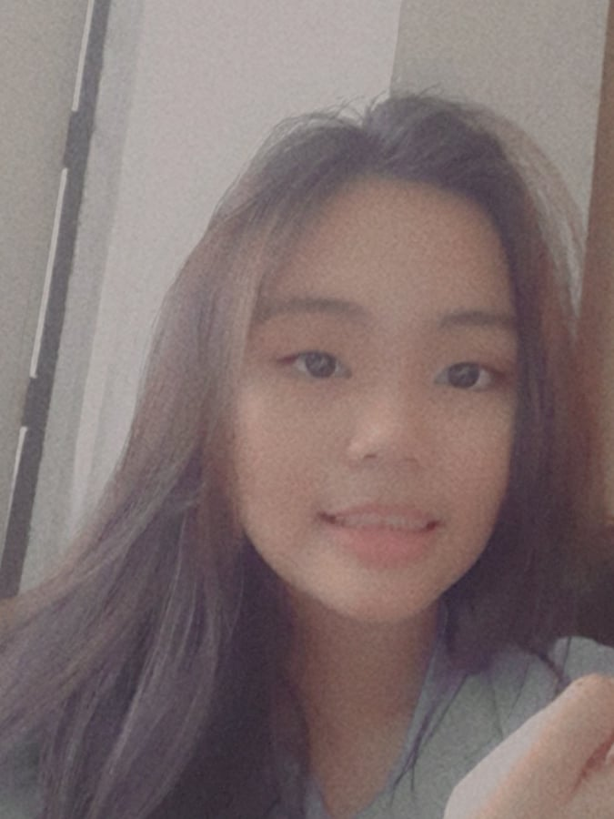

(I'm sorry I don't have any proper picture and I don't have pictures without filter )
🌺 My whole name is Xyene Gabrielle S. Meneses, I'm 14 years old, I'm born on April 18, 2006, and I am an aries.
🌺 I suffer from a disease called nocturnal lagophthalmos, I sleep with my eyes open. Lots of my friends don't know if I'm asleep or not, I think even the teachers don't know when I'm sleeping because I barely get scolded. This is both a blessing and a curse because as I stated I barely get reprimanded for sleeping in class, its a curse because it looks HORRENDOUS, creepy, and it causes eye irritation.
🌺 I'm learning how to write in Hangul so I can watch kdramas without subtitles.
🌺 I'm also also practicing how to suture because I wanna become a neurosurgeon or a cardiothoracic surgeon.
🌺 I'm bad at CS, Math, Physics, Statistics, English, Social Science, Filipino, Biology, PEHM, Chemistry, ValEd, Earth Science, and oh wait I think that's all the subjects we have zzzz.
🌺 This is not how my first website looks like because I got hit in the head and a small worm now lives there which tortures me everytime I don't do proper works.
🌺 I forget a lot of things, I can't remember what I was doing before I finished this page.
🌺 I forget a lot of things.
🌺 Yuno Gasai is my wife, its one-sided though because she still likes that bastard Yukiteru Amano.